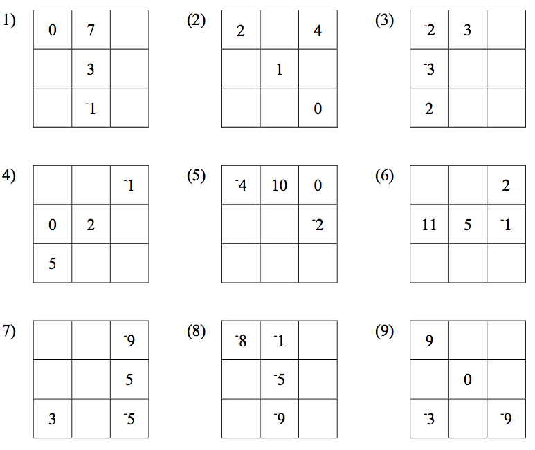
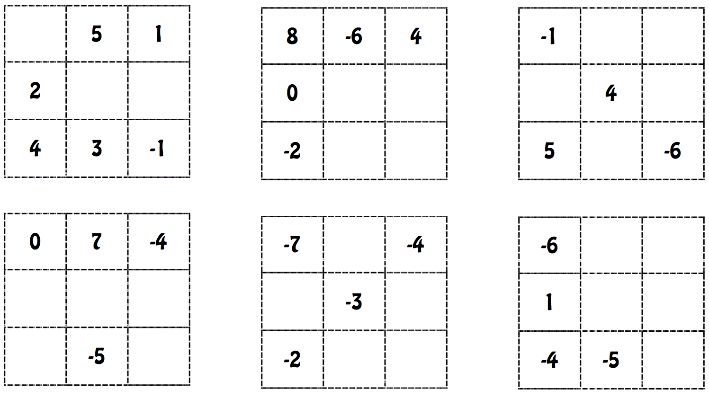

layout: false
class: center, middle, inverse

# Integer Tiles
### www.drpineda.ca
---
name: base
layout: true

---
# Integer Tiles
1. Explain why two “one” tiles and two “negative one” tiles can be used to represent zero

Complete the following calculations using integer tiles.
1. $-3 + 5$
1. $-2 + 5$
1. $-1 + 6$
1. $-4 + 1$
1. $-5 + 4$
1. $-7 + 2$
1. $2 + (-1) + 4$
1. $3 + (-2) + 4$
1. $5 + (-4) + 1$
1. $-1 + (-3) + 5$
1. $-2 + (-2) + 6$
1. $-1 + (-1) + 6$

---
Complete the following calculations using integer tiles.

1. $6-5$
1. $10-15$
1. $14-1$
1. $-6-4$
1. $-10-7$
1. $10+(-15)$
1. $14+(-1)$
1. $-6+(-4)$
1. $-10+(-7)$
1. Explain what you notice about each pair of answers above and what this tells you about the addition of a negative number.

Rewrite each of the following additions as a subtraction (you do not have to solve the questions)
1. $4+(-7)$
1. $-2+(-9)$
1. $20 + (-18)$
1. $\square + (-\triangle)$
1. $x+(-y)$
1. $-a+(-b)-c+(-d)$
---
# Magic squares
Complete the following magic squares and find the magic number.

---
